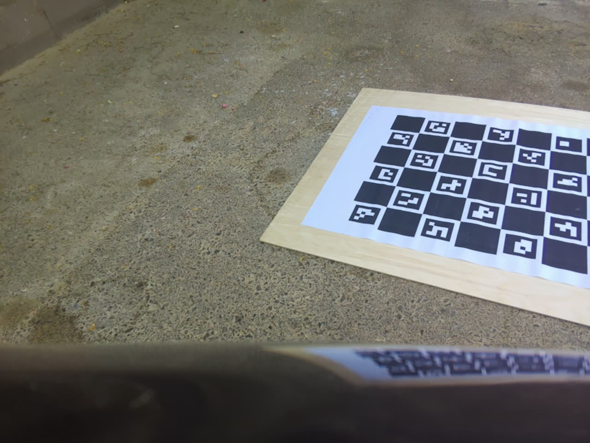
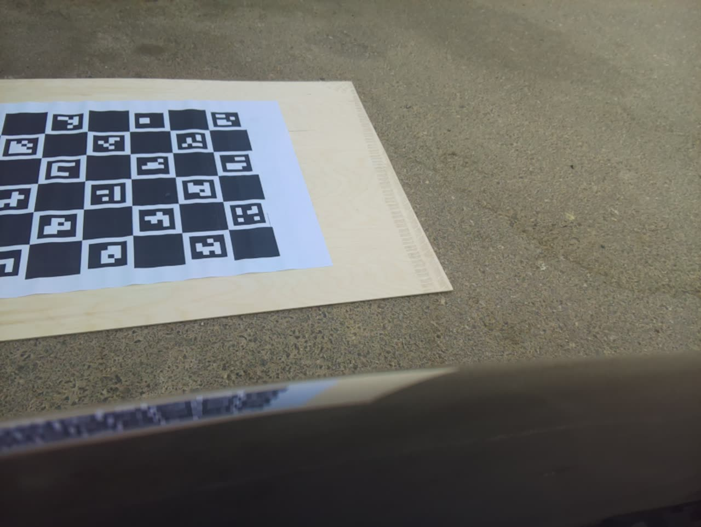
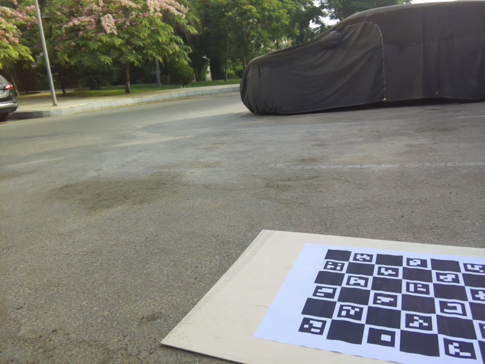
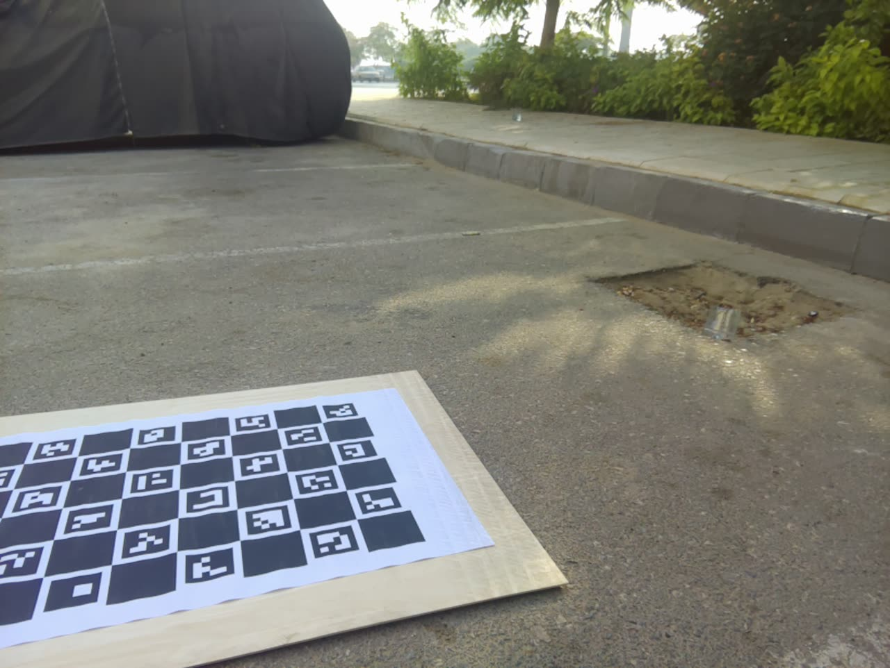
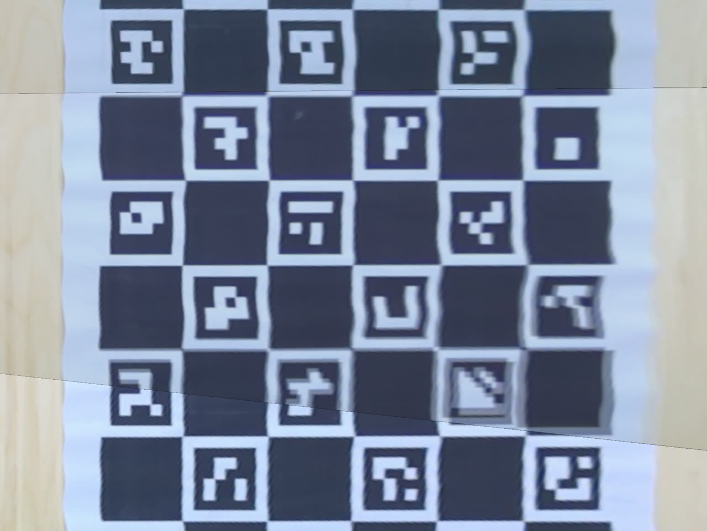
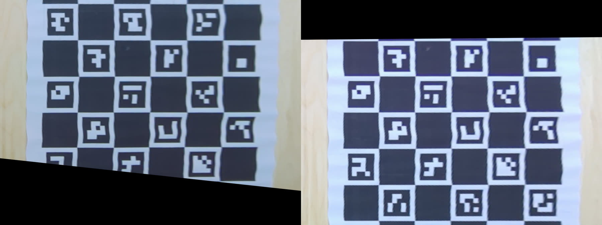
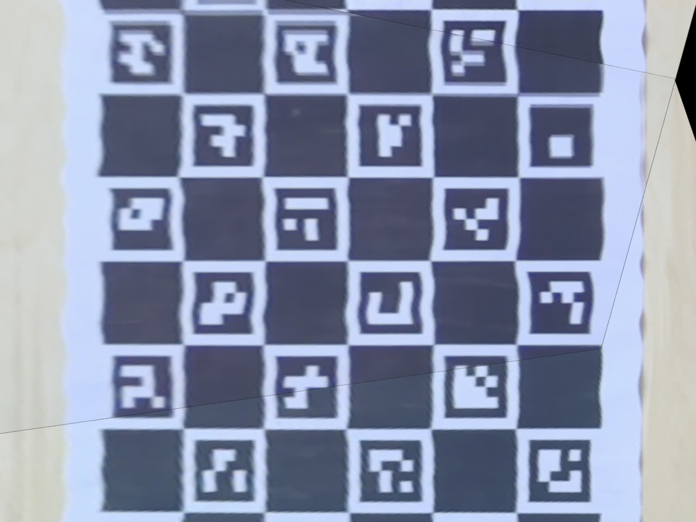
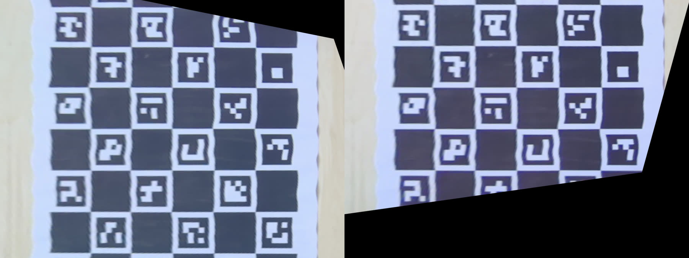

This week
bev-config.ini file — the app reads its parameters from that file on startup, and pressing W overwrites it with whatever values are currently set
Details
Week 9 ended on the ChArUco board fixing the intrinsic calibration and the "normal checkerboard has to be fully visible in both cameras" problem in theory. This week, I've used ChArUco, and it solved all of my problems !!!!!
I wrote a small bash script that records video and grabs a still image from the RPi 5 cameras in one pass, then took the camera out on the street with the ChArUco board and recorded several passes for real calibration data.
W=1640
H=1232
SETTLE=2000
DUR=30000
SESSION="captures/$(date +%Y%m%d_%H%M%S)"
mkdir -p "$SESSION"
rpicam-still --camera 0 --width $W --height $H -t $SETTLE --nopreview -o "$SESSION/camA.png" &
rpicam-still --camera 1 --width $W --height $H -t $SETTLE --nopreview -o "$SESSION/camB.png" &
wait
rpicam-vid --camera 0 --codec mjpeg --width $W --height $H -t $DUR --nopreview -o "$SESSION/camA.mjpeg" &
rpicam-vid --camera 1 --codec mjpeg --width $W --height $H -t $DUR --nopreview -o "$SESSION/camB.mjpeg" &
wait
ln -sf "$SESSION/camA.png" camA.png
ln -sf "$SESSION/camB.png" camB.png
echo "-> saved in $SESSION/ (stills camA.png/camB.png + video camA.mjpeg/camB.mjpeg)"



Split the calibration into two separate scripts, since they solve for different things from different shots:
The homography script also renders two verification images per pair, so a bad calibration is obvious to reshoot the board again before anything. Then it automatically generates a bev-config.ini with the new bev values, s we don't have to change the source code just for changing variables.




Worth being precise about what actually changed here: calibrating hb2i didn't replace
the IPM approach with something else, the shader is still backward-sampling through the same
s·[u,v,1]ᵀ = H·[X,Y,1]ᵀ ground-plane homography it always was. What changed is where
H's numbers come from. Before, H was built from a model —
K·[R|t], computed from hand-tuned guesses for the camera's height, pitch, and yaw. Now
it's measured directly from a real photo of the ChArUco board on the ground, so it can't be wrong
just because I mismeasured how the camera is actually mounted. Same algorithm, more trustworthy
numbers feeding it.
Until now, every live-tunable shader variable (height, pitch, yaw, pixel_per_m, per camera) reset
to hardcoded defaults on every run, so I was re-tuning by hand each time. Now the shader reads its
parameters from a bev-config.ini file on startup, and pressing W while
the preview is running overwrites that file with whatever values are currently set. Tuning is now
cumulative across runs instead of starting from scratch each time.
With multiple cameras now stitched into one BEV output, the overlap regions needed actual blending instead of a hard cut. Implemented two approaches to compare:
./libcamera‑dmabuf‑capture ‑‑preview ‑‑forward‑left cam‑fl.h265 ‑‑forward‑right cam‑fr.h265 ‑‑backward‑left cam‑bl.h265 ‑‑backward‑right cam‑br.h265
./libcamera‑dmabuf‑capture ‑‑preview ‑‑blend feather ‑‑forward‑left cam‑fl.h265 ‑‑forward‑right cam‑fr.h265 ‑‑backward‑left cam‑bl.h265 ‑‑backward‑right cam‑br.h265
./libcamera‑dmabuf‑capture ‑‑preview ‑‑blend pyramid ‑‑forward‑left cam‑fl.h265 ‑‑forward‑right cam‑fr.h265 ‑‑backward‑left cam‑bl.h265 ‑‑backward‑right cam‑br.h265